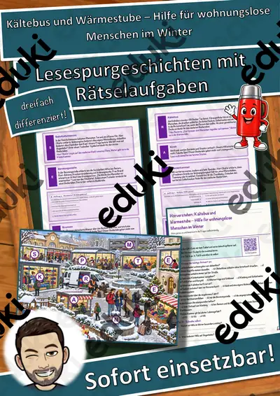
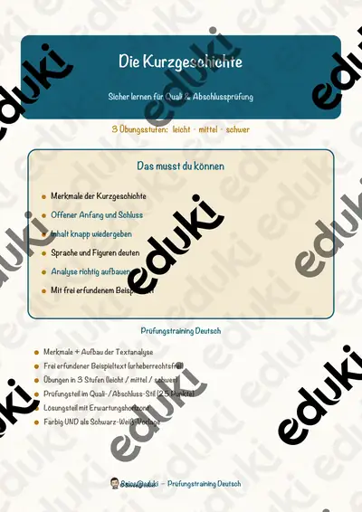
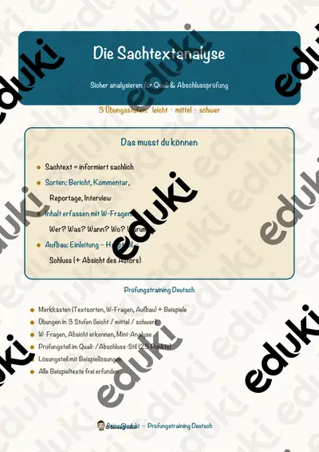
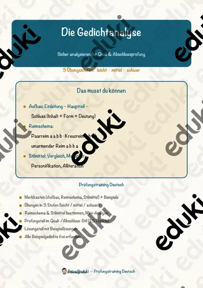
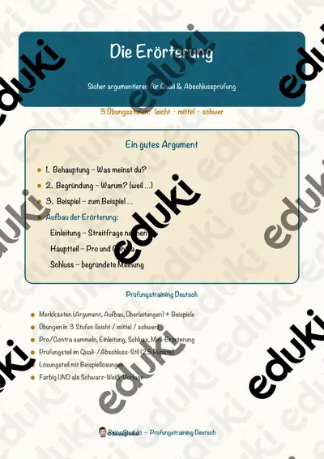
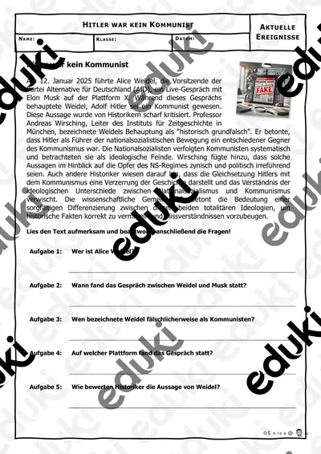

Kältebus und Wärmestube – Hilfe für wohnungslose Menschen im Winter – Lesespurgeschichte mit Rätselaufgaben (Klasse 9)

Der erste Ferienjob – Jugendarbeitsschutz, Minijob und Lohn – Lesespurgeschichte mit Rätselaufgaben (Klasse 9)

Der Ausbildungsvertrag – Probezeit, Urlaub, Rechte und Pflichten – Lesespurgeschichte mit Rätselaufgaben (Klasse 9)

Die Bewerbung – Anschreiben, Lebenslauf, Vorstellungsgespräch – Lesespurgeschichte mit Rätselaufgaben (Klasse 9)

Musikvideos – wie Bild und Klang zusammenwirken – Lesespurgeschichte mit Rätselaufgaben (Klasse 9)

Komponistinnen – Frauen in der Musikgeschichte – Lesespurgeschichte mit Rätselaufgaben (Klasse 9)

Glauben in Freiheit – Religionsfreiheit und Toleranz – Lesespurgeschichte mit Rätselaufgaben (Klasse 9)

Fernöstliche Religionen – Lesespurgeschichte mit Rätselaufgaben (Klasse 9)

Das Haus der Grundrechte – Lesespurgeschichte mit Rätselaufgaben (Klasse 9)

Der Landtag – Lesespurgeschichte mit Rätselaufgaben (Klasse 9)

Das Nachrichtenstudio – Lesespurgeschichte mit Rätselaufgaben (Klasse 9)

Das Gericht – Lesespurgeschichte mit Rätselaufgaben (Klasse 9)

Die Bundestagswahl – Lesespurgeschichte mit Rätselaufgaben (Klasse 9)

Das Gezeitenkraftwerk – Lesespurgeschichte mit Rätselaufgaben (Klasse 9)

Das Kohlekraftwerk – Lesespurgeschichte mit Rätselaufgaben (Klasse 9)

Der Staudamm – Lesespurgeschichte mit Rätselaufgaben (Klasse 9)

Das Windrad – Lesespurgeschichte mit Rätselaufgaben (Klasse 9)

Die Aluminiumhütte – Lesespurgeschichte mit Rätselaufgaben (Klasse 9)

Die Photovoltaikanlage – Lesespurgeschichte mit Rätselaufgaben (Klasse 9)

Das Kernkraftwerk – Lesespurgeschichte mit Rätselaufgaben (Klasse 9)

Die Schneiderei – Ein Praktikum beim Schneider – Lesespurgeschichte mit Rätselaufgaben (Klasse 9)

Die Gärtnerei – Ein Praktikum beim Gärtner – Lesespurgeschichte mit Rätselaufgaben (Klasse 9)

Der Malerbetrieb – Ein Praktikum beim Maler – Lesespurgeschichte mit Rätselaufgaben (Klasse 9)

Die Schreinerei – Ein Praktikum beim Tischler – Lesespurgeschichte mit Rätselaufgaben (Klasse 9)

Die Kfz-Werkstatt – Ein Praktikum beim Kfz-Mechatroniker – Lesespurgeschichte mit Rätselaufgaben (Klasse 9)

Der 3D-Druck – In der Technik-Werkstatt – Lesespurgeschichte mit Rätselaufgaben (Klasse 9)

Die Kurzgeschichte – Prüfungstraining Deutsch (Klasse 9)

Die Sachtextanalyse – Prüfungstraining Deutsch (Klasse 9)

Die Gedichtanalyse – Prüfungstraining Deutsch (Klasse 9)

Die Erörterung – Prüfungstraining Deutsch (Klasse 9)

Bewerbung & Praktikum – Paket Vorstellungsgespräch, Test & Vertrag: 6 Einheiten (Klasse 7–10)

Bewerbung & Praktikum – Paket Bewerbungsunterlagen: 5 Einheiten (Klasse 7–10)

Bewerbung & Praktikum – Paket Praktikum (Berufswahl bis Reflexion): 8 Einheiten (Klasse 7–10)

Praktikumsmappe & Praktikumsbericht – Bewerbung & Praktikum, 3 Stufen, mit Hilfen & Lösungen (Klasse 7–10)

Zusage, Absage & Nachfassen – Bewerbung & Praktikum, 3 Stufen, mit Hilfen & Lösungen (Klasse 7–10)

Assessment-Center – Bewerbung & Praktikum, 3 Stufen, mit Hilfen & Lösungen (Klasse 7–10)

Einstellungstest: Deutsch, Mathe & Logik – Bewerbung & Praktikum, 3 Stufen, mit Hilfen & Lösungen (Klasse 7–10)

Vorstellungsgespräch: Auftreten, Körpersprache & Rollenspiele – Bewerbung & Praktikum, 3 Stufen, mit Hilfen & Lösungen (Klasse 7–10)

Vorstellungsgespräch: Fragen, Antworten & Gegenfragen – Bewerbung & Praktikum, 3 Stufen, mit Hilfen & Lösungen (Klasse 7–10)

Online-Bewerbung – Bewerbung & Praktikum, 3 Stufen, mit Hilfen & Lösungen (Klasse 7–10)

Bewerbungsfoto, Mappe & E-Mail-Bewerbung – Bewerbung & Praktikum, 3 Stufen, mit Hilfen & Lösungen (Klasse 7–10)

Lebenslauf: tabellarisch, Lücken, Layout – Bewerbung & Praktikum, 3 Stufen, mit Hilfen & Lösungen (Klasse 7–10)

Anschreiben: Formulierungshilfen & Fehler finden – Bewerbung & Praktikum, 3 Stufen, mit Hilfen & Lösungen (Klasse 7–10)

Anschreiben: Aufbau & Bausteine – Bewerbung & Praktikum, 3 Stufen, mit Hilfen & Lösungen (Klasse 7–10)

Praktikumsreflexion – Bewerbung & Praktikum, 3 Stufen, mit Hilfen & Lösungen (Klasse 7–10)

Tagesbericht & Wochenbericht – Bewerbung & Praktikum, 3 Stufen, mit Hilfen & Lösungen (Klasse 7–10)

Bewerbung um einen Praktikumsplatz – Bewerbung & Praktikum, 3 Stufen, mit Hilfen & Lösungen (Klasse 7–10)

Praktikumsplatz finden & Telefonat mit dem Betrieb – Bewerbung & Praktikum, 3 Stufen, mit Hilfen & Lösungen (Klasse 7–10)

Materialpaket - Papstwahl - Papstwechsel

Papstwechsel - Amtseinführung des neuen Papstes

Papstwechsel - Annahme und Namenswahl

Papstwechsel - Vorbereitung und Beginn des Konklaves

Materialpaket - Internationale Tage im April

04-28 Welttag für Sicherheit und Gesundheit am Arbeitsplatz

04-26 Internationaler Tag des Gedenkens an die Katastrophe von Tschernobyl

04-25 Internationaler Tag der Delegierten

04-24 Internationaler Tag des Multilateralismus und der Diplomatie für Frieden

04-23 Tag der englischen Sprache

04-21 Welttag der Kreativität und Innovation

04-20 Tag der chinesischen Sprache

04-14 World Chagas Disease Day

04-12 Internationaler Tag des bemannten Raumflugs

04-06 Internationaler Tag des Sports für Entwicklung und Frieden

04-04 Internationaler Tag zur Aufklärung über die Minengefahr
Materialpaket - Internationale Tage im März

03-21 Welttag der Poesie

03-10 Internationaler Tag der Richterinnen

03-05 Internationaler Tag der Abrüstung und der Förderung des Bewusstseins für Nichtverbreitung

Hitler war kein Kommunist - Aktuelle Ereignisse #demokratiestärken

Materialpaket - Internationale Tage im Februar

02-12 Internationaler Tag für die Verhütung von Gewaltextremismus

02-11 Internationaler Tag der Frauen und Mädchen in der Wissenschaft

01-27 Internationaler Tag des Gedenkens an die Opfer des Holocaust

Bewerbung Dritte Seite- Bewerbung

Materialpaket Bewerbung Anschreiben, Deckblatt, Lebenslauf, Dritte Seite - Bewerbung - Praktikum

Bewerbung Lebenslauf - Bewerbung

Bewerbung Deckblatt - Bewerbung

Zeitstrahl Kunstgeschichte - Kunstepochen - Epochenübersicht - Kunst
Keine Materialien gefunden – versuch einen anderen Suchbegriff oder Filter.